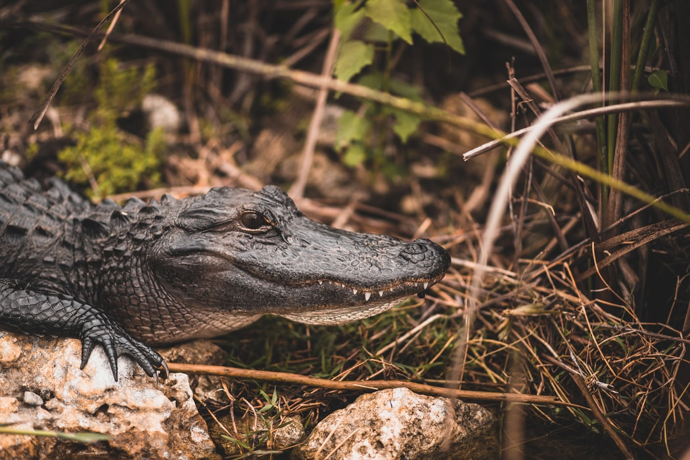
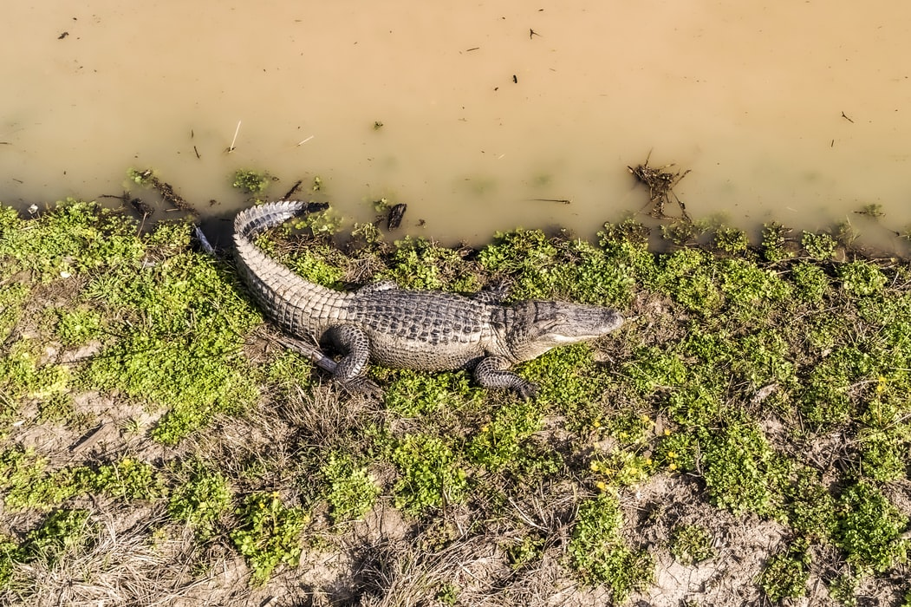
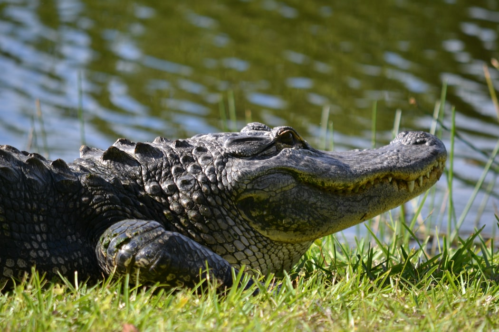
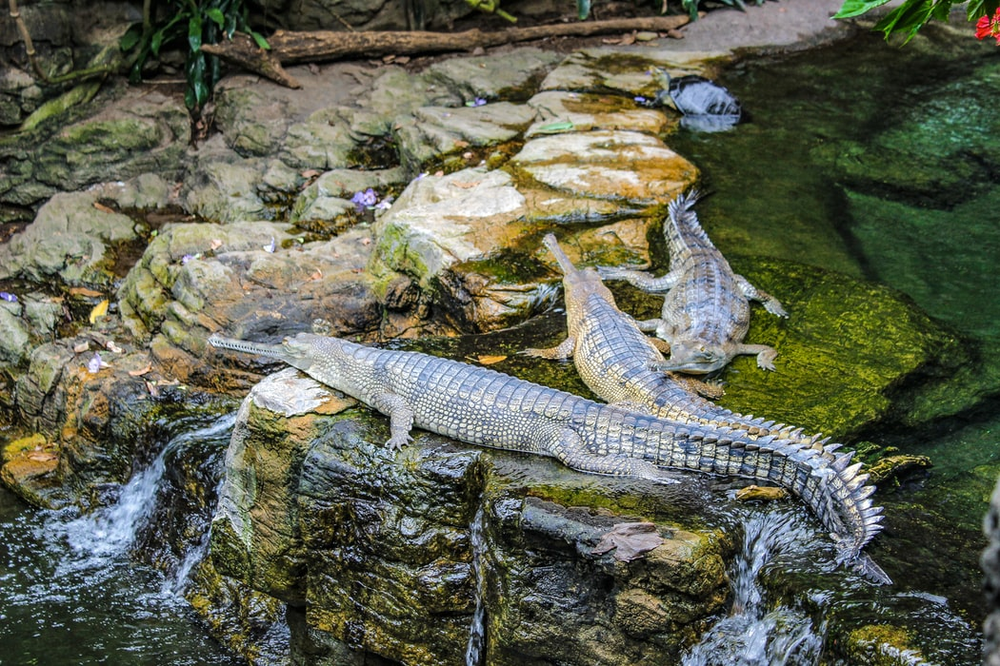

American Alligator As Specie
American alligators are found in the wild in the southeastern
United States. They are most commonly found in Florida and
Louisiana, where they inhabit rivers, lakes, ponds, swamps,
bayous, and marshes. These reptiles are awkward on land, but they
were designed for life in the water. They are excellent swimmers,
with webbed feet and powerful tails that propel them through the
water. A typical male American alligator measures 10 to 15 feet
(three to five meters) in length. Its large, powerful tail
accounts for half of its length. An alligator may weigh up to half
a ton (1,000 pounds), although the average male weighs 500 to 600
pounds (227 to 272 kilograms). Males are often larger than
females.


Life in the Water
American alligators live almost entirely in the south eastern
United States' freshwater rivers, lakes, swamps, and marshes,
particularly in Florida and Louisiana. These reptiles are
extremely well suited swimmers despite being heavy and awkward out
of the water. Males can grow to be 10 to 15 feet tall and weigh up
to 1,000 pounds. Females can reach a maximum height of 9.8 feet.
Reproduction
Hatchlings measure 6 to 8 inches in length and have yellow and
black stripes. Juveniles, who are prey to dozens of predators such
as birds, raccoons, bobcats, and even other alligators, often stay
with their moms for around two years.


Diet
Adult alligators are apex predators that are essential to the
biodiversity of their environment. They mostly consume fish,
turtles, snakes, and small animals. They are, nevertheless,
opportunists, and a hungry gator will devour almost anything, even
carrion, pets, and, in rare cases, humans.